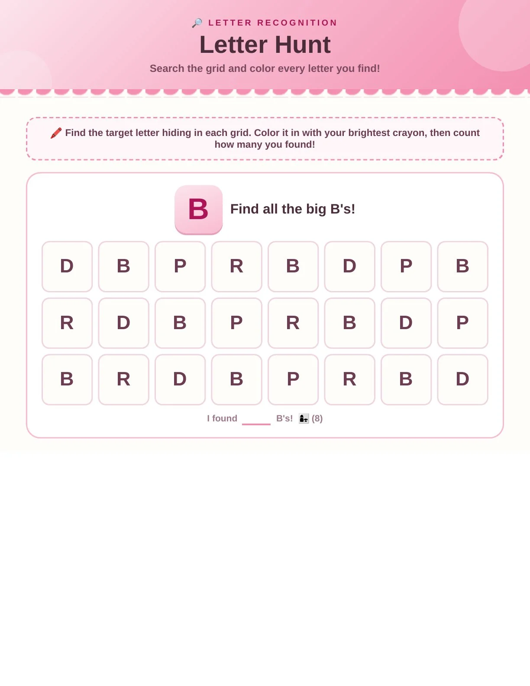

Letter Recognition Activities Fun Alphabet Learning For Toddlers & Preschoolers
This free printable letter recognition activities gives toddlers and preschoolers a fun, no-prep way to practice letter recognition and early literacy. Print the pages and practice letters through play.
Quick Answer
Recognizing letters is the first step into reading, and these letter recognition activities for preschoolers and toddlers turn it into play. Games and hands-on activities help children spot, name and remember letters, and a Letter Hunt A–Z printable is ready on this page too. Free PDF activities — print at home, no signup.
At a Glance
- Ages: Toddlers and preschoolers
- Activity: Activities and games for recognizing letters
- Skills: Letter recognition and early literacy
- Format: Printable activities (PDF)
- Cost: Free, no signup
🔤 How To Use These Activities
- Pick an activity below that matches your child’s mood and energy.
- Print it if it is a printable — most need just paper and crayons. The print button opens the full-size page in a new tab if you prefer to print from there.
- Do it together first, then let your child take the lead.
- Come back for more — new activities are added regularly.
⭐ Start Learning The Alphabet
Choose a printable activity below and make learning letters fun every day.

🖨️ Download Your Free Letter Hunt A-Z Printable
Find and color the hidden letters! Two exciting letter hunts in one printable. Print it out, grab the crayons, and you're ready — no signup needed.
⬇️ Download Free Printable 🖨️ Print🎁 Free printable for toddlers & preschoolers
Why Letter Recognition Matters
Recognizing letters is one of the first building blocks of reading. These printable activities help children develop visual discrimination, alphabet knowledge, and confidence before beginning phonics and writing.
📚 Continue Learning
Pair these activities with alphabet coloring pages, tracing worksheets, and beginning sound activities for even more learning fun.
🎨 Alphabet Coloring PagesMore Free Toddler Resources
Discover hundreds of printable learning activities, potty training resources, coloring pages, crafts, and educational games.
🎁 View All Free Resources🔤 What Letter Recognition Really Means
Letter recognition is simply spotting a letter and knowing its name — seeing a B on a page, a sign, or a cereal box and saying "B." It is the step that comes before letter sounds and long before reading words, and it is mostly a visual skill: your child is learning that this shape is always B, whether it is big, small, pink, or printed on the side of a truck.
Most children learn uppercase letters first because their shapes are easier to tell apart, and almost every child starts with the letters in their own name — those are the letters they see most and care about most. Some 2-year-olds can name a few letters, many 4- and 5-year-olds know most of the alphabet, and everything in between is normal. The letter recognition activities on this page are built for that whole range: quick, playful, and easy to repeat a little every day.
🖨️ No Printer? Letter Practice Without Printing
Every activity on this page can be practiced without printing a thing. Open an activity, look at the letters together on screen, and try these versions:
- Letter hunt at home. Pick one target letter and hunt for it together on book covers, food boxes, and mail. First one to spot five wins.
- Finger tracing. Trace the letter shape with a finger on carpet, on a tray of salt or sugar, or big in the air — big movements help the shape stick.
- Name letters. Start with the letters in your child's name. Put them on the fridge and name them together at breakfast.
- Read the signs. Point out one letter on every sign, menu, and shop name when you are out. Real-world letters count double, because your child will notice them again tomorrow.
Printing helps once your child is ready to color, stamp, and trace with crayons in hand — and every activity card above links to a page with its own printable version.
🎂 Letter Activities by Age & Stage
Ages 2–3 — first letters. Stick to a few uppercase letters at a time, starting with your child's name. The uppercase matching pages are the right level: one big letter, one match, lots of praise. Sessions of about five minutes are plenty at this age.
Ages 3–4 — the full alphabet. Add lowercase matching once uppercase feels familiar. Lowercase is where look-alike letters (b, d, p, q) need slow, playful practice, and the lowercase matching pages take them one set at a time. Find & color the letter works well here too: hunting for every matching letter builds the careful looking that reading needs.
Ages 4–5 — getting ready to read. Dot marker alphabet pages add speed and confidence, alphabet tracing connects each letter's shape to writing it, and the Letter Hunt A–Z printable below turns the whole alphabet into one game. Children at this stage can also start pairing a letter with its sound — "B says buh" — while they play.
💡 Teaching Tips That Help Letters Stick
- Start with their name. The letters in a child's own name are learned first and fastest — they are the letters that matter to the child.
- Few letters, often. Two or three letters practiced daily beat the whole alphabet once a week.
- Say the name, not just the sound. Letter names come first; sounds layer on top once the shapes are familiar.
- Celebrate spotting, skip the quizzing. "You found a B!" teaches more than "What letter is this?" on repeat.
- Mix up the order. Always singing A-B-C in order teaches the song, not the letters. Shuffle pages and cards so each letter has to stand on its own.
- Stop while it's fun. Five happy minutes a day will out-teach one long forced session every time.
❓ Letter Recognition Activities FAQ
Are these letter recognition activities really free?
Yes — every one of these letter recognition activities for preschoolers is 100% free, with no signup and no payment.
What ages are these activities for?
They are designed for toddlers and preschoolers, and most are fun to do together with a grown-up.
What supplies do we need?
Most activities need just printed pages and crayons or markers. Check each activity for anything extra.
🔗 More Free Printables You’ll Love
- Free Alphabet Coloring Pages Free printable alphabet coloring pages for little learners.
- Free Letter A Formation Practice Free printable letter a formation practice for little learners.
- Free Letter A Sound Match Free printable letter a sound match for little learners.
- Free Letter A Uppercase Lowercase Practice Free printable letter a uppercase lowercase practice for little learners.